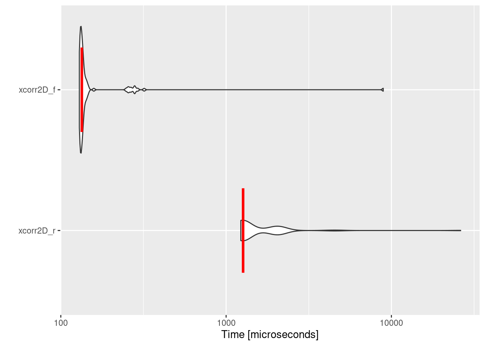
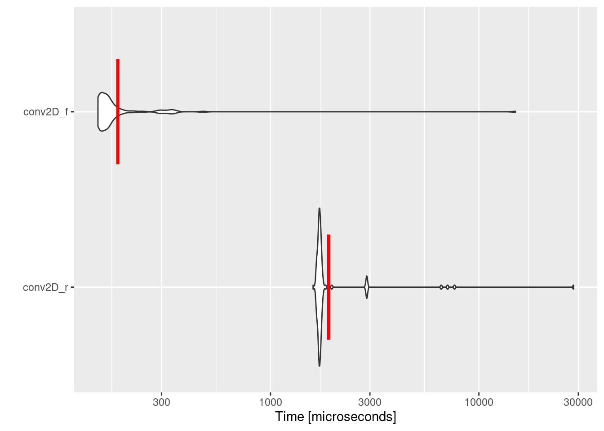
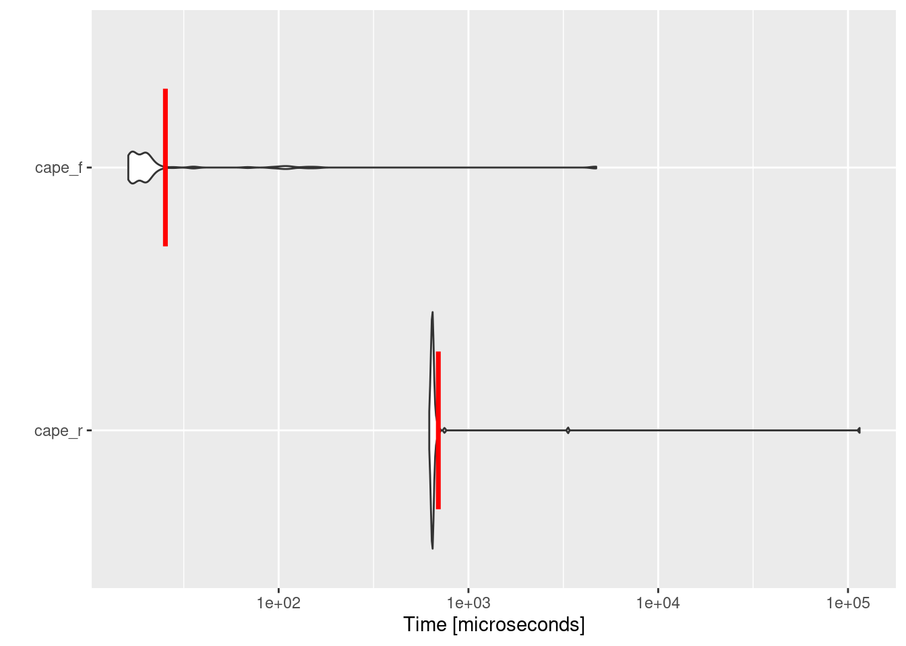

xcorr2D_r0 <- function(a, b) {
# the full CC matrix
cc_row <- nrow(a) + nrow(b) - 1
cc_col <- ncol(a) + ncol(b) - 1
cc <- matrix(1:c(cc_row * cc_col),
byrow = FALSE, ncol = cc_col
)
# obtain possible shifts
min_row_shift <- -(nrow(b) - 1)
max_row_shift <- (nrow(a) - 1)
min_col_shift <- -(ncol(b) - 1)
max_col_shift <- (ncol(a) - 1)
# Padded matrix
rows_padded <- abs(min_row_shift) +
nrow(a) + abs(max_row_shift)
cols_padded <- abs(min_col_shift) +
ncol(a) + abs(max_col_shift)
# a
padded_a <- matrix(0,
nrow = rows_padded,
ncol = cols_padded
)
padded_a[
(abs(min_row_shift) + 1):(abs(min_row_shift) + nrow(a)),
(abs(min_col_shift) + 1):(abs(min_col_shift) + ncol(a))
] <- a
for (icol in 1:cc_col) {
for (irow in 1:cc_row) {
icc <- irow + ((icol - 1) * cc_row)
cols <- (icol):(icol + ncol(b) - 1)
rows <- (irow):(irow + nrow(b) - 1)
# b
padded_b <- array(0,
dim = c(rows_padded, cols_padded)
)
padded_b[rows, cols] <- b
cc[irow, icol] <- sum(padded_a * padded_b)
}
}
return(cc)
}2 Accelerate R Scripts with Fortran
In this chapter, we will compare the efficiency of running three computationally demanding examples in pure R script versus using another R script with the core computations performed in Fortran.
2.1 2D Coss-Correlation
In signal processing, cross-correlation is a measure of the similarity between two signals as a function of the displacement of one relative to the other (Wang, 2019). It can deliver information about the time lag between the two signals. 2D cross-correlation is often applied in computer vision for visual tracking. For example, it is used in template matching, feature detection, and motion tracking. 2D cross-correlation also plays an important role in convolutional networks and machine learning.
In atmospheric science, oceanography, climate, and water research, 2D cross-correlation can be applied in various ways. For example, it can be used to estimate ocean surface currents (Warren et al., 2016), cloud tracking using satellite imagery (Seelig et al., 2021), and Particle Image Velocimetry (PIV) in fluid dynamics applications (Willert & Gharib, 1991).
The 2D cross-correlation of an array \(F_{(M, N)}\), and array \(G_{(P, Q)}\), can be given as the array \(CC_{(M+P-1, N+Q-1)}\) as shown in Equation 2.1.
\[ CC_{(s,t)} = \sum_{m = 0}^{M-1}\sum_{n = 0}^{N-1} F_{(m,n)} G_{(m-s, n-t)} \tag{2.1}\]
where \(s\) varies between \(-(P-1)\) and \((M-1)\) while \(t\) varies between \(-(Q-1)\) and \((N-1)\). \(F\) and \(G \in R\).
Now, let us define the xcorr2D_r function as shown in Listing 2.1. The function receives two matrices or arrays a & b and return the full cross-correlation plane cc.
Moving forward, we can define the xcorr2d_f subroutine in Fortran as shown in Listing 2.2. Subroutines are generally the approach for integrating Fortran in R. Function in Fortran return a single value with no option of altering the input arguments, while subroutines have the ability to perform complex tasks while altering input arguments. This proofs to be helpful e.g., in solving equations system.
Another imperative point is to define the dimension of the arrays when passing them to Fortran (i.e. explicit-shape arrays). To illustrate, m, n, p, q, k, l are the dimension of input arrays aand b, and the out array cc.
subroutine xcorr2d_f(m, n, p, q, k, l, a, b, cc)
implicit none
integer :: m, n, p, q, k, l
double precision, dimension(m, n) :: a
double precision, dimension(p, q) :: b
double precision, dimension(k, l) :: cc
! dummy vars
integer :: min_row_shift, min_col_shift
integer :: max_row_shift, max_col_shift
integer :: rows_padded, cols_padded
integer :: icol, irow, icc, icol2, irow2
real, allocatable, dimension(:, :) :: padded_a, padded_b
! obtain possible shfits
min_row_shift = -1*(p - 1)
max_row_shift = m - 1
min_col_shift = -1*(q - 1)
max_col_shift = n - 1
! Padded arrray
rows_padded = abs(min_row_shift) + m + abs(max_row_shift)
cols_padded = abs(min_col_shift) + n + abs(max_col_shift)
! A
allocate (padded_a(rows_padded, cols_padded))
padded_a = 0.0
padded_a((abs(min_row_shift) + 1):(abs(min_row_shift) + m), &
(abs(min_col_shift) + 1):(abs(min_col_shift) + n)) = a
! B
allocate (padded_b(rows_padded, cols_padded))
padded_b = 0.0
do icol = 1, l
do irow = 1, k
icc = irow + ((icol - 1)*k)
icol2 = icol + q - 1
irow2 = irow + p - 1
padded_b(irow:irow2, icol:icol2) = b
cc(irow, icol) = sum(padded_a*padded_b)
padded_b = 0.0
end do
end do
end subroutine xcorr2d_fSince Fortran is a compiled language, we need to save the subroutine in xcorr2D.f90 file and compile it using: R CMD SHLIB xcorr2D.f90
Note
Please use the terminal tab in Rstudio or open a new terminal using Alt+Shift+R
As mentioned earlier, we need to pass the dimension of the arrays to Fortran. Therefore, it would logical to write a wrapping function for Fortran subroutine that provides other input arguments.
In the wrapper function (Listing 2.3), we initially require loading the shared object, which is the compiled Fortran subroutine, as dyn.load("path/to/xcorr2D.so"). Furthermore, it is important to prepare other input variables for Fortran such as the dimensions of the input and output arrays. Imperatively, data types should be approached carefully. Before calling .Fortran(), all storage mode of the variables in R was converted to the appropriate type using either as.double() or as.integer(). If the wrong type is passed, it can result in a hard-to-catch error or unexpected results1.
xcorr2D_f0 <- function(a, b) {
# Please adjust the path to your setup. In my machine,
dyn.load("AquaFortR_Codes/xcorr2D.so")
# the full CC matrix
cc_row <- nrow(a) + nrow(b) - 1
cc_col <- ncol(a) + ncol(b) - 1
cc <- matrix(1:c(cc_row * cc_col), byrow = FALSE, ncol = cc_col)
cc<- .Fortran("xcorr2d_f",
m = as.integer(dim(a)[1]),
n = as.integer(dim(a)[2]),
p = as.integer(dim(b)[1]),
q = as.integer(dim(b)[2]),
k = as.integer(cc_row),
l = as.integer(cc_row),
a = as.double(a),
b = as.double(b),
cc = as.double(cc)
)$cc
return(cc)
}Now, we can use an example to compare the performance of the two functions. In order to do so, microbenchmark package needs to be installed, and ggplot2 is required for plotting.
The obtained benchmarking data allows (mbm) for a quantitative comparison of the computational efficiency between the two methods. By printing “mbm” in the console (print(mbm)) it is evident that Fortran outperforms the R implementation of 2D cross-correlation by a factor of ~10. The significance of leveraging Fortran becomes evident in Figure 2.1.
library(microbenchmark)
library(ggplot2)
set.seed(72)
# Assume a
a <- structure(runif(64), dim = c(8L, 8L))
# Assume b
b <- structure(runif(64), dim = c(8L, 8L))
mbm <- microbenchmark(
xcorr2D_r = xcorr2D_r0(a, b),
xcorr2D_f = xcorr2D_f0(a, b)
)
autoplot(mbm) +
stat_summary(
fun = "median",
geom = "crossbar",
width = 0.6,
colour = "red"
)

2.2 2D Convolution
Convolution and cross-correlation are both operations applied to two dimensional data (e.g., matrix). Cross-correlation involves sliding a kernel (filter) across a matrix, while convolution involves sliding a flipped kernel across an matrix (Draelos, 2019). Most spatial data in earth science are is discretised resulting in large data sets. Sometimes, these data sets include noise which can obscure meaningful patterns and relationships. One of the prominent methods to remove this nose while preserving important features and structures is the Gaussian smoothing filter. Gaussian smoothing is often achieved by convolution where \(F\) is the original data, and \(G\) is the kernel representing the 2D Gaussian coefficients.
The 2D convolution of an array \(F_{(M, N)}\), and array \(G_{(P, Q)}\), can be given as the array \(Conv_{(M+P-1, N+Q-1)}\). \(hv\) means that \(G\) is flipped.
\[ Conv_{(s,t)} = \sum_{m = 0}^{M-1}\sum_{n = 0}^{N-1} F_{(m,n)} G_{(m-s, n-t)}^{hv} \tag{2.2}\]
where \(s\) varies between \(-(P-1)\) and \((M-1)\) while \(t\) varies between \(-(Q-1)\) and \((N-1)\). \(F\) and \(G \in R\).
Indeed, it is possible to flip the second array and utilise the functions from Section 2.1. Nevertheless, our focus is on the comprehensive workflow. Listing 2.4 presents the implementation of convolution in R, whereas Listing 2.5 demonstrates the Fortran version.
conv2D_r0 <- function(a, b) {
# the full convolution matrix
conv_row <- nrow(a) + nrow(b) - 1
conv_col <- ncol(a) + ncol(b) - 1
conv <- matrix(1:c(conv_row * conv_col), byrow = FALSE, ncol = conv_col)
# obtain possible shifts
min_row_shift <- -(nrow(b) - 1)
max_row_shift <- (nrow(a) - 1)
min_col_shift <- -(ncol(b) - 1)
max_col_shift <- (ncol(a) - 1)
# Padded matrix
rows_padded <- abs(min_row_shift) + nrow(a) + abs(max_row_shift)
cols_padded <- abs(min_col_shift) + ncol(a) + abs(max_col_shift)
# a
padded_a <- matrix(0, nrow = rows_padded, ncol = cols_padded)
padded_a[
(abs(min_row_shift) + 1):(abs(min_row_shift) + nrow(a)),
(abs(min_col_shift) + 1):(abs(min_col_shift) + ncol(a))
] <- a
for (icol in 1:conv_col) {
for (irow in 1:conv_row) {
iconv <- irow + ((icol - 1) * conv_row)
cols <- (icol):(icol + ncol(b) - 1)
rows <- (irow):(irow + nrow(b) - 1)
# b
padded_b <- array(0, dim = c(rows_padded, cols_padded))
# flip the kernel i.e. b
padded_b[rows, cols] <- b[nrow(b):1, ncol(b):1]
conv[irow, icol] <- sum(padded_a * padded_b)
}
}
return(conv)
}subroutine conv2d_f(m, n, p, q, k, l, a, b, conv)
implicit none
integer :: m, n, p, q, k, l, i, j
double precision, dimension(m, n) :: a
double precision, dimension(p, q) :: b
double precision, dimension(k, l) :: conv
! dummy vars
integer :: min_row_shift, min_col_shift
integer :: max_row_shift, max_col_shift
integer :: rows_padded, cols_padded
integer :: icol, irow, iconv, icol2, irow2
real, allocatable, dimension(:, :) :: padded_a, padded_b
! obtain possible shfits
min_row_shift = -1*(p - 1)
max_row_shift = m - 1
min_col_shift = -1*(q - 1)
max_col_shift = n - 1
! Padded arrray
rows_padded = abs(min_row_shift) + m + abs(max_row_shift)
cols_padded = abs(min_col_shift) + n + abs(max_col_shift)
! A
allocate (padded_a(rows_padded, cols_padded))
padded_a = 0.0
padded_a((abs(min_row_shift) + 1):(abs(min_row_shift) + m), &
(abs(min_col_shift) + 1):(abs(min_col_shift) + n)) = a
! B
allocate (padded_b(rows_padded, cols_padded))
padded_b = 0.0
do icol = 1, l
do irow = 1, k
iconv = irow + ((icol - 1)*k)
icol2 = icol + q - 1
irow2 = irow + p - 1
padded_b(irow:irow2, icol:icol2) = b(p:1:-1,q:1:-1)
conv(irow, icol) = sum(padded_a*padded_b)
padded_b = 0.0
end do
end do
end subroutine conv2d_fThe gfortran compiler is also capable of creating shared libraries. It allows for easy addition of other flags, such as enabling the generation of the run-time check (-fcheck=all). The code below shows two options for compiling conv2D.f90 by R or the gfortran compiler.
# R
R CMD SHLIB conv2D.f90
# gfortran
gfortran -fpic -shared conv2D.f90 -o conv2D.soIn R wrapper function, .C64() from dotCall64 package will be used instead of .Fortran(). According to Gerber et al. (2018), .C64() transcends other foreign function interfaces in many aspects:
- It supports long vectors.
- The
SIGNATUREargument ensures that the interfaced R objects are of the specified types - The
INTENTargument helps avoid unnecessary copies of R objects between languages. It is very important when working with large data sets.
In Listing 2.6, the basic input arguments, such as the dimensions of input and output arrays, are prepared. Afterwards, the SIGNATURE is defined as six integers and three doubles corresponding to the required types in the subroutine. INTENT will ensure that only the conv argument is copied between R and Fortran. This is particularly important in large productions, where coping the subroutine parameters can extend beyond the available memory (RAM).
conv2D_f0 <- function(a, b) {
require(dotCall64)
dyn.load("AquaFortR_Codes/conv2D.so")
m <- nrow(a)
n <- ncol(b)
p <- nrow(b)
q <- ncol(b)
# the full convolution matrix
conv_row <- m + p - 1
conv_col <- n + q - 1
conv <- matrix(0,
ncol = conv_col,
nrow = conv_row
)
conv <- .C64("conv2d_f",
SIGNATURE = c(
rep("integer", 6),
rep("double", 3)),
INTENT = c(rep("r",8), "rw"),
m, n, p, q,
k = conv_row,
l = conv_col,
a = a, b = b,
conv = conv
)$conv
return(conv)
}
Note
A Gaussian smoothing filter can be applied to an array a using b as the Gaussian kernel or the 2D Gaussian coefficients. However, the convolution and cross-correlation can be optimised using the Fast Fourier Transform (FFT). See Chapter 4.
library(microbenchmark)
library(ggplot2)
set.seed(72)
# Assume a
a <- structure(runif(64), dim = c(8L, 8L))
# Assume b
b <- structure(runif(64), dim = c(8L, 8L))
mbm <- microbenchmark(
conv2D_r = conv2D_r0(a, b),
conv2D_f = conv2D_f0(a, b)
)
autoplot(mbm) +
stat_summary(
fun = "mean",
geom = "crossbar",
width = 0.6,
colour = "red"
)

Similar to cross-correlation calculation, the Fortran implementation of convolution outperforms the R one by a factor of ~10. Performing convolution in large data set using R and Fortran is beneficial since it reduce the required computational resources.
Question
After learning about .Fortran() and .C64(), you can use one of the two examples above and compare the performance of the two interfaces using microbenchmark(). Which function is faster?
2.3 Convective Available Potential Energy (CAPE)
According to the Glossary of Meteorology, CAPE is “the potential energy of an air parcel due to positive buoyancy, which is a useful tool for forecasting, parameterising, and estimating the potential updraft strength of convective clouds.” CAPE is calculated as follows (Stull, 2016):
\[ CAPE = R_d \sum_{p_{LFC}}^{p_{EL}} (T_p - T_v) . ln(\frac{p_{bottom}}{p_{top}}) \tag{2.3}\]
where \(R_d\) is the gas constant for dry air, \(T_p\) is the parcel temperature, \(T_e\) is the environment temperature, \(p\) is pressure, \(LFC\) is the Level of Free Convection, and \(EL\) is the Equilibrium Level.
Under a warming climate, CAPE is expected to increase (Chen et al., 2020), which can result in an elevated risk of thunderstorms. It is crucial for humanity to quantify the future risk for proper preparation and mitigation. Typically, thunderstorms are investigated with convective-permitting modelling (CPM) where the horizontal resolution is less than 4km. CPM simulations produce vast amount of data sets, and CAPE estimation at a specific gridpoint and time is an integration along the vertical profile (@#eq-cape).
Given the rapid advancements in computing power, it is anticipated that CPM is expected to be performed at finer horizontal and vertical resolution, thereby increasing the complexity of estimating CAPE. It is essential that the enhancement of computing power is accompanied by responsible management and allocation of these resources.
Since CAPE calculation scripts are highly complex and lengthy, the necessary codes are only available in supplementary materials. Additionally, to test the two implementations of CAPE, the AquaFortR package should be installed to utilise the example data. See Listing 2.7.
if (!require(AquaFortR)) {
remotes::install_github("AHomoudi/AquaFortR", subdir = "RPackage")
}
library(AquaFortR)
data("radiosonde")
Temperature <- radiosonde$temp + 273.15 # K
Dewpoint <- radiosonde$dpt + 273.15 # K
Pressure <- radiosonde$pressure # hPa
# Mixing ratio
MixingRatio <- mixing_ratio_from_dewpoint(Dewpoint, Pressure)
t_parcel <- Temperature[1]
dwpt_parcel <- Dewpoint[1]
mr_parcel <- MixingRatio[1]
source("AquaFortR_Codes/cape_r.R")
source("AquaFortR_Codes/cape_f.R")
Important
Foremost, the Fortran subroutine need to be complied as shown in previous sections. The path to the shared library cape_f.so in cape_f.R file should be adapted to the correct path.
As mentioned, integration between R and Fortran should be accomplished through subroutines. Nevertheless, some calculations are complex, and using functions or other subroutines is inevitable. In cape.f90, a module containing all the required utilities was written, and then the main subroutine was included. The approach ensures cape_f has access to the module and is simultaneously available to R.
Exploring Figure 2.3, it is evident that the implementation of Fortran is faster than R by a factor of ~28, proofing that integrating Fortran in R is vital for performance and beneficial for the environment.
library(microbenchmark)
library(ggplot2)
mbm <- microbenchmark(
cape_r = cape_r0(t_parcel, dwpt_parcel, mr_parcel,
Pressure, Temperature, MixingRatio,
vtc = TRUE
),
cape_f = cape_f0(t_parcel, dwpt_parcel, mr_parcel,
Pressure, Temperature, MixingRatio,
vtc = TRUE
)
)
autoplot(mbm) +
stat_summary(
fun = "mean",
geom = "crossbar",
width = 0.6,
colour = "red"
)

Writing R Extensions, 5.2 Interface functions .C and .Fortran↩︎